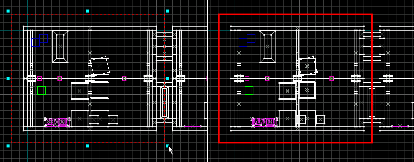

Using Cordon Tools
Toggle Cordon State
This function will toggle the visibility and effect of a cordon area you have created with the Edit Cordon Bounds tool. When the Toggle Cordon State is activated, a thick red line will appear around that area. When you compile, only the inside of that red area will be compiled, and a box will be placed around the area to seal leaks. With the button deactivated, the cordon area will not be visible, and the compile will be unaffected by the cordon. See Edit Cordon Bounds for information on how to create and edit cordon areas.
Edit Cordon Bounds
This function allows you to "cordon off" an area in order to test compile a section of the map file. When the Toggle Cordon State is activated, a thick red line will appear around that area. When you compile, only the objects inside of that red area will be compiled, and a black box will be placed around the area to seal leaks.
This is extremely useful when you are working on a large level and want to look at changes made in only a small area. Rather than wait a considerable amount of time for the entire map to compile, you can selectively compile only a small area by using the cordon functions.
This function allows you to create new cordon boundaries, or edit existing ones. After enabling Edit Cordon Bounds, the editing handles of a cordon area will become active. Drag the boundary handles to a new area to change the size of the area. Select an different editing tool to deactivate Edit Cordon Bounds and make the changes to the cordon area.
To create a new cordon area:
- Select the Edit Cordon Bounds button on the MapOperations Toolbar. The Toggle Cordon State button will also automatically activate.
- Drag a selection box in one of the 2D views.
- Resize the selection box as necessary, in any of the 2D views.
- Select any other editing tool from the MapTools Toolbar to finish creating the cordon area. The Toggle Cordon State button will remain active.
Tip: Make sure a player start point lies within the bounds of the cordoned area before you run a test compile, otherwise the game will place the player at the world origin when you load the map in the game engine.

To edit an existing cordon area:
- Select the Edit Cordon Bounds button on the MapOperations Toolbar. The Toggle Cordon State button will also automatically activate.
- Drag the handles of the selection box in any of the 2D views to change the size of the cordon area.
- Click-drag in the center of the selection box to move the entire box at once.
- Select any other editing tool from the MapTools Toolbar to finish editing the cordon area. The Toggle Cordon State button will remain active.
© 2004 Valve Corporation. All rights reserved. Valve, the Valve logo, Half-Life, the Half-Life logo, the Lambda logo, Steam, the Steam logo, Team Fortress, the Team Fortress logo, Opposing Force, Day of Defeat, the Day of Defeat logo, Counter-Strike, the Counter-Strike logo, Source, the Source logo, Hammer and Counter-Strike: Condition Zero are trademarks and/or registered trademarks of Valve Corporation. Microsoft and Visual Studio are trademarks and/or registered trademarks of Microsoft Corporation. All other trademarks are property of their respective owners.